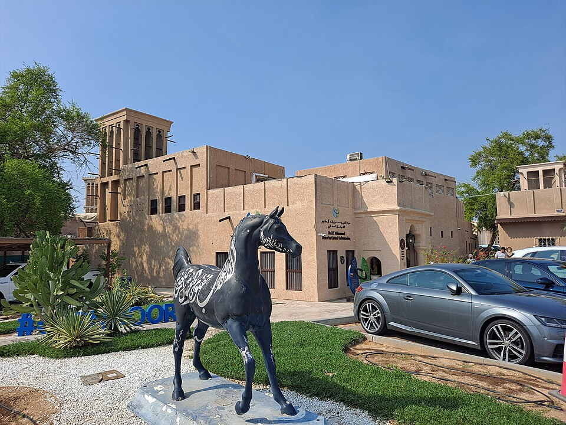
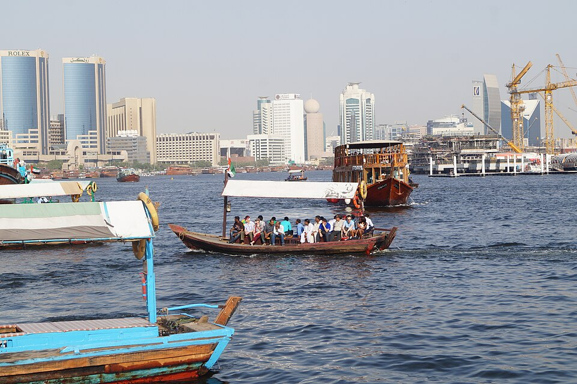
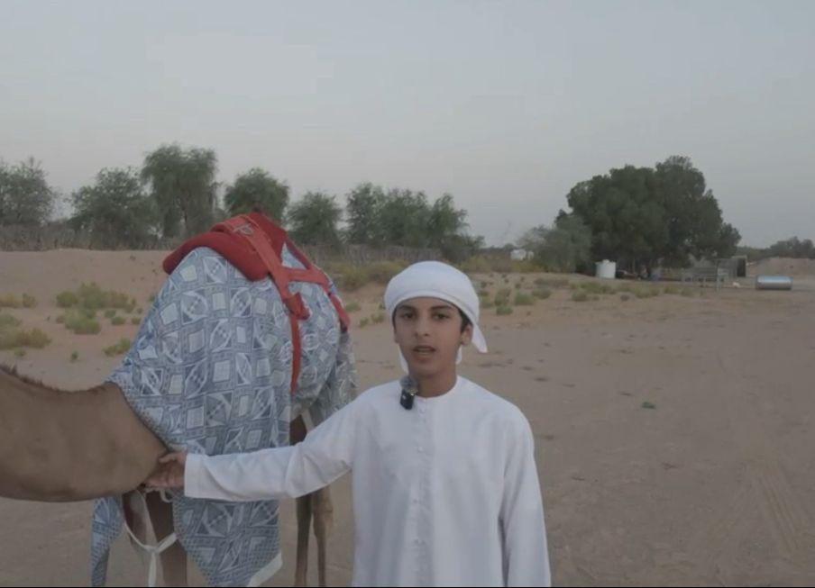

رحلة متحركة في أصالة الإمارات — من بيوت العريش والغوص على اللؤلؤ، إلى السدو والقهوة. واسأل مساعدنا الذكي عن أي شيء 🇦🇪
صور حقيقية تدور في مدارٍ فني — حرّك الماوس لتتجاوب معك.
نجمة الخاتم التراثية — هندسةٌ تدور بلا نهاية.
اكتب أي كلمة (قهوة، صقر، دبي، لؤلؤ...) لتجد ما يخصّها فوراً.
التراث الإماراتي هو ذاكرة الأجداد وروح الحاضر — نسيجٌ من العادات والفنون والحِرَف نشأ بين رمال الصحراء وأمواج الخليج، وصاغته حياة البر والبحر عبر قرون من الكرم والصبر والإبداع. لم يكن مجرد إرثٍ يُحكى، بل أسلوب حياةٍ متكامل صنع شخصية الإنسان الإماراتي.
قبل اكتشاف النفط، عاش الأجداد على الغوص على اللؤلؤ وصيد الأسماك والتجارة البحرية صيفاً، وعلى تربية الإبل والصيد بالصقور والترحال بحثاً عن الماء والكلأ في البر. ومن رحم هذه الحياة الصعبة وُلدت قيمٌ خالدة: الكرم، والشجاعة، والتكافل بين أبناء "الفريج" الواحد، واحترام الكبير.
اليوم، تحرص دولة الإمارات على صون هذا التراث وتوثيقه ونقله للأجيال — وقد أدرجت منظمة اليونسكو عناصر إماراتية كثيرة على قوائم التراث الإنساني، من القهوة العربية والسدو والصقارة إلى العيّالة والنخلة، تأكيداً على أصالةٍ تستحق أن يعرفها العالم.

البستكية — أقدم أحياء دبي بأبراج هوائها وأزقّتها الطينية
كان البحر مصدر الرزق الأول قبل النفط؛ يخرج الأجداد في رحلة الغوص الكبير أربعة أشهر صيفاً على ظهر سفن البوم والسنبوك، يغوص الغوّاص عشرات الأمتار بنفَسٍ واحد بحثاً عن المحار، بينما يردّد البحّارة أهازيج النهمة التي تشدّ العزائم.
كانت لآلئ الخليج من أجود لآلئ العالم، فربطت الإمارات بأسواق الهند وأوروبا، وصنعت قيم الصبر والتكاتف والشجاعة التي ما زالت حاضرة في وجدان الإماراتي.

سفن خشبية حملت الأجداد للغوص والتجارة عبر الخليج

سفينة الصحراء ورفيق البدوي في الترحال
في البر عاش الأجداد على تربية الإبل والصيد بالصقور والترحال بحثاً عن الماء والكلأ. كانت الإبل سفينة الصحراء ومصدر الحليب واللحم والوبر، وعنوان الثروة والكرم، فارتبط اسم الإماراتي بإبله في الشعر والأمثال.
ومن رحم هذه الحياة الصعبة وُلدت قيمٌ خالدة — الكرم، والشجاعة، والتكافل بين أبناء الفريج الواحد، واحترام الكبير، وحُسن الضيافة.
أبدعت يد المرأة الإماراتية فنّ السدو — نسيجٌ من صوف الإبل بألوانه الأحمر والأسود والأبيض والبني ورموزه المستوحاة من الصحراء، صُنع منه بيت الشَّعر والوسائد وزينة الهجن.
وإلى جانبه ازدهر التلّي (التطريز بالخيوط الذهبية والفضية)، والخوص من سعف النخيل، والفخار في رأس الخيمة — حِرَفٌ جمعت بين الجمال والوظيفة وصارت رمزاً للهوية.

نسيج بدوي يدوي من صوف الإبل برموزٍ أصيلة

رمز الكرم والضيافة في المجالس الإماراتية
في قلب التراث الإماراتي يجلس المجلس — مكان اللقاء والمشورة والكرم. تُقدَّم فيه القهوة العربية بالهيل من الدلّة النحاسية في فناجين صغيرة، يبدأ بها أكبر الحاضرين سنّاً، وفق آدابٍ توارثها الناس جيلاً بعد جيل.
ويرافقها التمر واللقيمات والهريس والمجبوس — أطباقٌ تجمع العائلة، وتجعل من الضيافة لغةً يفهمها كل ضيف، وعنواناً للأصالة الإماراتية.
لقطات حيّة من تراث الإمارات.
"البوش" كلمةٌ إماراتية تعني قطيع الإبل، وهي أكثر من مجرد حيوان — إنها رفيق الأجداد في الترحال، ومصدر الحليب واللحم والوبر، ورمز الصبر والكرم والأصالة. ارتبط اسم الإماراتي بإبله ارتباطاً عميقاً، حتى صارت الإبل جزءاً من الهوية الوطنية والفخر، تُقام لها المهرجانات وتُنظَّم لها السباقات وتُغنّى لها القصائد.
حِكَمٌ توارثها الأجداد، تختصر تجارب الحياة في كلمات.
مرّر على أي بطاقة (أو المسها) لتنقلب وتكشف المعلومة.
حرّك الماوس على البطاقات — تتمايل في الفضاء ثلاثي الأبعاد.
لوحة من صور التراث بأحجامٍ مختلفة — مرّر عليها لتكبر.
مرّر الماوس (أو المس) أي كلمة لترى صورتها.
اضغط أي إمارة لتشاهد أبرز معالمها التراثية.
استكشف مواقع التراث في الإمارات — اضغط أي نقطة لتفاصيلها.
اسحب يميناً ويساراً لتستعرض محطات التراث والتاريخ.
يا زينَ تراثٍ ورِثناه عن الأجداد، عِزٌّ وأصالةٌ ما تزول.
— من وحي التراث الإماراتي
كم باقٍ على احتفال الإمارات باليوم الوطني في ٢ ديسمبر.
🎉 كل عام والإمارات بخير — اليوم الوطني سعيد! 🇦🇪
رحلتك في تراث الإمارات مع عمار في ٤ خطوات بسيطة.
استكشف الصور والأقسام عن البحر والبر والحِرَف والعمارة والضيافة.
استخدم «المرشّح التراثي» ليقترح لك من أين تبدأ رحلتك.
اسأل المساعد الذكي أي سؤال بالعربية أو الإنجليزية، واطلب أفكاراً وتصاميم.
شاركنا رأيك بالنجوم لنطوّر الموقع ونحفظ تراثنا بأبهى صورة.
صور حقيقية ومعلومات دقيقة من مصادر موثوقة — تشمل ما أدرجته اليونسكو من تراث الإمارات.
📷 الصور من Wikimedia Commons (رخص حرة) · المعلومات من اليونسكو ومصادر التراث الرسمية.
الجهات والمؤسّسات الرسمية التي تحفظ تراث الإمارات وتوثّقه وتنقله للأجيال — اضغط أي بطاقة لزيارة موقعها الرسمي.
🔗 روابط لمواقع الجهات الرسمية ومصادر التراث المعتمدة في الدولة.
صور حقيقية مرتّبة في قوسٍ فني — مرّر الماوس عليها.
شريط متحرك من صور التراث الحقيقية.
حرّك الماوس — الصور تطفو وتتجاوب مع حركتك (تأثير بارالاكس).
مساعدك الذكي بلمسة فنية ثلاثية الأبعاد — حرّكه بالماوس.

اسأل عمار AI عن أي شيء، واكتشف كنوز الإمارات خطوةً بخطوة.
🎨 اسأل عمار الآنمساعد ذكي يجاوبك عن أي سؤال في تراث وفنون الإمارات، ويصمم لك أفكاراً فنية أصيلة.
«عمار AI» هو رفيقك الذكي في رحلة التراث الإماراتي — مدرّبٌ على عمق المعرفة بالعمارة الطينية وبيوت العريش، والغوص واللؤلؤ، والسدو والتلّي، والقهوة والمجالس، والصقارة والإبل، والشعر النبطي والفنون الشعبية. اسأله بالعربية أو الإنجليزية، وسيجيبك بدقّةٍ ثقافية وأسلوبٍ دافئ، ويقترح عليك أفكاراً وتصاميم أصيلة خطوةً بخطوة. سواء كنت طالباً يبحث عن معلومة، أو مصمّماً يريد لوحة ألوانٍ تراثية، أو زائراً فضولياً — عمار جاهزٌ يساعدك في أي وقت.
🌙 عمار قد يخطئ أحياناً — تأكد من المعلومات المهمة.
اسحب البطاقة يميناً أو يساراً لتكتشف عنصراً جديداً من تراث الإمارات.
حرّك المؤشر فوق المنطقة المظلمة لتكشف ما يختبئ في الظلام — تماماً كمن يستكشف بفانوسٍ وهّاج.
حرّك الفانوس ✨
اختر ما يثير فضولك، ودع عمار يقترح لك أين تبدأ رحلتك في التراث.
كلماتٌ تسعدنا من محبّي التراث الإماراتي.
اسحب المقبض يميناً ويساراً لترى كيف تحوّلت الإمارات — من العمارة الطينية إلى ناطحات السحاب.

إجابات سريعة عن أكثر الأسئلة حول تراث الإمارات وعن عمار AI.
أدرجت اليونسكو عناصر كثيرة من تراث الإمارات، أبرزها: القهوة العربية، السدو، الصقارة، العيّالة، النخلة، إضافةً إلى مواقع العين الأثرية على قائمة التراث العالمي.
عاشوا على الغوص على اللؤلؤ وصيد الأسماك والتجارة البحرية صيفاً، وعلى تربية الإبل والصيد بالصقور والترحال في البر بحثاً عن الماء والكلأ.
البارجيل (برج الهواء) نظام تبريد طبيعي عبقري كان يلتقط النسيم ويوجّهه إلى داخل البيت قبل عصر المكيّفات — أشهر أمثلته في حي الفهيدي بدبي.
عمار مساعد ذكي يجاوبك عن أي سؤال في تراث وفنون الإمارات بالعربية أو الإنجليزية، ويصمّم لك أفكاراً وألواناً تراثية، ويشرح ويُلهمك خطوةً بخطوة.
آراء تلهمنا للحفاظ على تراث الإمارات وتقديمه بأبهى صورة.
تجربةٌ راقية تجمع تراث الإمارات الأصيل في مكانٍ واحد بأسلوبٍ عصري وذكي. كل تفصيلٍ فيها يحمل روح الهوية الوطنية ويعرّف العالم بكنوزنا — من بيوت العريش والغوص على اللؤلؤ إلى السدو والقهوة. عملٌ يستحق الفخر، ويحفظ ذاكرتنا للأجيال القادمة. 🇦🇪
من بيت العريش إلى الفضاء، ومن صوت النهمة في عرض البحر إلى صهيل الهجن في البر — تبقى الجذور هي أصلنا وبوصلتنا.
«الذي ليس له ماضٍ، ليس له حاضرٌ ولا مستقبل»
— الشيخ زايد بن سلطان آل نهيان، طيّب الله ثراه